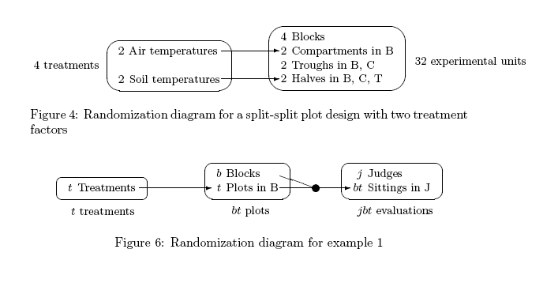

Split-plot randomization versus composed randomizations
A split-plot experiment is often thought to involve two a randomizations. For example, one randomization might randomize one or more treatment factors to main plots while the remaining treatment factors are randomized, in a second randomization, to the subplots. Indeed the split-plot experiment involves two independent randomizations. However, as noted by Brien and Bailey (2006, section 8.5), these two randomizations can be achieved with a single randomization in which there is a single set of objects, say units, to which another set of objects, say treatments, is randomized. Consequently, the randomizations in a split-plot experiment are not innately a multiple randomizations and, where they can be so reduced, we regard it as a single randomization.
Composed randomizations occur in two-phase experiments. Consider a two-phase experiment in which treatments are randomized to plots in the first phase and the plots are randomized to positions in the laboratory phase, in each case using a possibly-different experimental design. Because the two randomizations involve different sets of objects, plots and positions, it is impossible to reduce the two randomizations to a single permutation of one of the sets of objects. That is, composed randomizations are innately multiple randomizations.
The fundamental difference between the randomization for a split-plot experiment and an experiment involving composed randomizations, such as a two-phase experiments, is underlined by the difference between their randomization diagrams. In particular, compare figures 4 and 6 from Brien and Bailey (2006).
